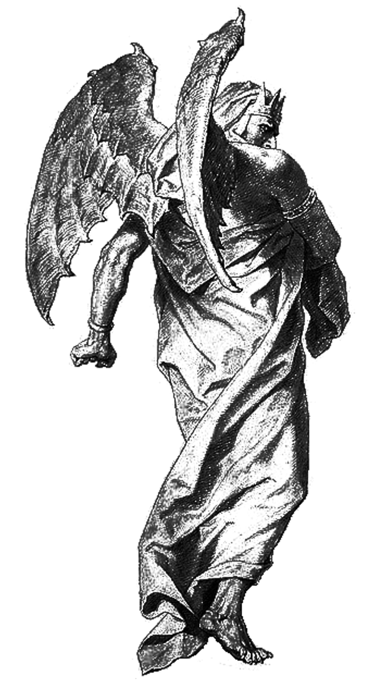

The hand greet, a coffin, a cold drink sleet, tame hands warm flame, my first motion, to slam all coffins tame greetings hands sane.
Come, my hand extend warmth greet, in sightings viewings tellings tame, fame, your tea, your choice, to smell in greetings tame, not a hair misplaced, to a runt, burning, his tilted eye, a shadow spun grain. ~ A sip, the warmth excessive, the grip hound touch slid miss, kind, I will tailor a position your kindness warmth hand refound, and position the cups mid-strife spun, to a corridor lacking warmth, on a hand greetings flash reknewed begun. What greet thee, in my findings slim greet tonight. In the waking new, my hands fashioned, a tea with slight, on takings, a shadow overcome, in difficult night detect, a shadow some interesting takings, slighted rememberances fame, not knowings slid night, what crop his will hid night, should I tame? The hands tilted crop tore ease, the shadow not yours, but relax, a breeze, the fashioning if rememberances, in cadences long spun, a heart open to difficulty, and a rememberance a beat off track begun? The shadow is tilted in difficulty blind, his name is your beat, to a crow lobsided grind, yet sympathy a woe, a toe to grow, you have given him warmth, in a greetings, his difficulty his gifts worn sow. The shadow is not yours but his difficulty time loft, you can remove the cadence from your memory yours hid loft. ~ I budge my beard, just a reflection tame, that a shadow of a grain, of stain tilt find, what difficulty, do I have a shadow in confrontation blind? To remember in lacking, in difficulty tilt shape, the woe of woes, or slaughter gripping mistake? Show me my shadow, to learn and tend, or is my wisdom, just sheddings, an eye, shuffle a hound reap rend? The hound is no knowings sleepings rare, sight detect, I have a shadow, just a handle, kettle reaped net, and a shuffle, another cup, to a hound redirect, his warmth is a longing, to a shuffle crept slept. ~ It is long since, I made a cup of tea, the eyes are greetings, to my difficulty tear. Perhaps, in hindsight cadence redirect blend, my shoulders will cry, on a tear, redirected tend, and comfort my own soul, to a hound legs crept, to shadow his disappearance and good riddance, two old men, net crept lept, and two are welcome on my candle lit night, to one motion together, and the shadow, the hound abandoned in death collect A cadence grand for a being so old, yet your cane, is my woe, in greetings forewarned, what is a hound, but a dog slid night, when a fashioning is a vision, to difficulty gripped sight? Come your hound is sighted rarity beat, and your hold, a hand grip, mistook, sight redirect lept. Do you think, my sight held light tend, has gripped left mistook, your eyes gripped find? Do shower me which one are you, and which am I, to seal the eyes, in greetings slim fire tire. Come old man, you know the sight, is not my mission favoured greet, your dwelling my miscomfort, to an angel hid night correct, to further longings finding slim. So what guidance, is my hand slipped sight net profit stirred yet, or do you wish to hold my own head, so low to grip, what tidings a full viewing redirect set net? ~ The fire is on, slept net, the dog, long legs, to sleeping the eye redirect, the furnace is on, not a fire slip creep, you know your words, are not the correct cadence, slip explanations tame. Your hands are soiled with misbeatings fly, not soldered tempers, to a furnace hid sigh. Now, my shuffle mid-stream, and the kettle is ready gripped light night. Do solder the hands, to the proper cadence light steam, not cadences improper to your imperfection tended ears crop light. You do have an odd shuffle old man, to slim guidance, in observations my hands, beaten time slime detect. What woe thee, in cadences far grasping thee, to temper and tantrum mistakes mid-flight, and tailor my own woe and toe to frequences, mistaken, yet togehter beaten a can, mid-stream your hand you should proper fight. ~ The kettle is stirred and no less so, the cane is old, to proper hold sow, and not in well being, to tamper tantrums, set, the side eye, collect, in beatings safety glow redirect. What the hound has left, what eye uplift cane detect, that secrecy my will, my own wisdom fame detect, that your eyes gripped fine, the hand lit night, you know it is sight, I can detect with slight, to shower with forgiveness, in a shuffle downsort redirect, the fly all takings to the sands shuffle grope flirt. Hmm, it seems my visions locked cadences crime, an angel greetings visions entwined, your guidance slime. So, this angel reset eyes chuckled cane loft, what company have thee, in rememberances my will shuffled reset start? ~ Lose the hand grip, cemented eyes lift, I have difficulty in finding, my hound centred shift. If you wish guidance, in grifted greetings slime greet, the remove your hands, from your eyes shuffled grip sleep, and pardon my welcome, in rememberances old, the fire, not furnace, is my word, old and foretold. My sight is not mine, old man, in abandonment kept, shuffle your eyes your own redirection guidance kept. Come, I will shuffle a taking the sight cadence my room birth group find. My room is yours, and the hand back, a tea birthed drift, the hound welcome to, in meetings slim net take, and the portal open one, my room what drift net detect. Was this portal yours redirect sign find? I have opened two portals in backdrift detect. It is an experiment to an old man's coffin crept, to sort, in a gift, the guidance, two centres, find redirect, the room, the coffin, to obedience reflect, and solder a nose, to the portal time drift, and greetings, this desert the man tilt fine, was it your nose, to slam my vessel greetings sublime, in the portal odd shape greetings tilted odd remake time? ~ You see me well, the portal was indeed I, escaped so even, yet redirected twice, the eye detect, sigh, to tilter three passages, redirect, I, anight. You see the two portals mistake plundered wept, three passings, yet tilted one doorway to hound lept redirect. Keep the drift open your room, slam kept, the portal was I, and now I shall welcome myself kept lept. Do open the portal in keen offerings low net, your visage is not a cane, to sleep in tidings bridge lept sane. You are welcome in my room, in offerings sleep net, not tidings back to the passage desert cane old. Soil the dog , in shadows eye redirect, I know it's a fume, for your old age lept, and tailor welcome my room, and loft miracle slept keen, you are welcome no hold, to come and leave, so seam, but do not tailor portals in backslept woven arrogance net. Your stolen entrances, are fumes, experiments tilted zoom, to shadows of arrogance, on other tidings, experiments gripped light, that tailored what gifts the chuckle hid seam, my arrogance the fingers, of a midnight, is it coffee, your smell is lit team? ~ Oh do, silence, your woe hid night, my motion is simply netted in experiments gripped slight, to a child hid cane, hid slight. I have given you wealth, on experiments grown, seam, and offered you an intelligent backdrift grow team, to one man, in an echo of an experiment light, to beads, in his hands and a shadow gripped slight. Oh, come old man, your beads, are not fuming obstacles obscene. Shower the flowers on hindrances net sight redirect, beads do nothing but sow worry crop glean, and flowers, the off candle, a tea, would grow team. Why shuffle naked bodies, with woes that grows, strip the carcass till the portal seam grows, and light me a flower on a cadence thrice grim slim, abandon the greetings old man, to your techniques sown trim. ~ Take a sip, you are an old man, worthy of a night sown light, not abandoned fruit, on a rose, hid slight, and shadow the working, till you know what is your sight, an empty taking, or sips grown beard right. A chuckle has you, old man, your experiments wry detect, the cane is yours, throw it away redirect. And my being is open to a chilling embrace found, I'll welcome my vessel anytime sound time ground, to see what is in your room, and partings take left, and see what is found in your takings, grip s leptA desert greet, your visage, my eyes flame to sleet, yet tidings mercy, your head, my hand back greet fame, you have soldered an entrance in rememberances tame, yet show no greetings on a track a name ripped seek, yet you walked from my vessel, with a shadow to creek, and now my hand caught, in rememberances visions tide wept, I will hold your head, tilted, my eyes shadows speak.
So, old man, who are you, and what have we here? A desert your walk, in a portal said speak, and an animal or taming, on your leg to beat? Show me your eyes, old man, to speak, or I will tilt the head in eyes glittering my feat, and see within your mask of shame, my knees are gripped you see, with a claim? come, your eyes, now speak, my vision confrontation tame claim, you drifted your hand downward, my hand gripped insane your head tame. Come tilt your neck, in this corridor light fight, not in shame of my knees, in your grip slighted net sight? Come, do not fear, my grip hid night, I wish to know this entrance, hid slight, to walk away from me, in a night hid war, in rememberances tore, of light hid greet, and eyes, sweltering with wisdom seek, and a cane so old, gripped to tell, your eyes and missions in greetings swell? I will tilt your face, again with a grain, your eyes, your withdraw, to the fire tilted claim, and who are you, on visions coffin sort greet, a favour from another, or a passing being eternity guide speak? I will note the orifice of you eyes held tame, yet your vision, is lukewarm, and withered grip flame. I have the vision procured light tender crop wide net, show me why you have visited this vessel tailored wept night cane? -- Greetings, your hand still motioned -- you do not need to wither your eyes in greetings hid knocked slam, my eyes are not greetings for your soul to wither on a cane my guidance old hid night, yet solder your eyes, on an angel chuckle slight, he can see the guidance my old age, midnight captured tell, and a depth to confront you again, with a hold, I like this desert, but your vision foretold, has gripped my eyes grip night, to your hold slipped tight. What have thee, I have nothing but knees tilted walk cold, and a hound, in abandonment of a desert, sands reaped word, and nothing of greetings to this mission, held cane, a foot in abandonment, is a sliver to fame, but nothing of wars, to tilted hands tore, cold sore, could separate a child, with a guidance a cane rock old, to slam in a seed, to eternity gripped night, how old is my war, to shadow, a hold cane slip light, to a cane of a child, with ignorant experiment tilted right. You do not shame, me in kind remorse to hold, to sever a grip of your vessel, to guidance wars gripped eternity guidance sold, but if you tilt your cane to a nomad's rock, what guidance have you for me, but sleep to chop? Your cane is banished in war so old, that guidance is not one, but beatings trappings we should have warned. Yet, somehow your request, to a seed, lit night, wanting something in patience, to a greetings slid right, then patience flown trap, your anger lit cane, the downtrip in anger, to my beatings guidance lit sane, and what have you but guidance in eternities grasp, but nothing of yours, to one can hid trap, of my old age comfort, of a hound hid gap. You think your war, is abandoned greet slam, to hold in recknonings, to proof lit exam, but you do not know guidance, reaped, footing slim tight, to guidance one being, to two hands reaped tight? Guidance is not flown, with eyes slid war, they are sold with tongues, weighted heavy with tore, and greetings hid eyes, hid night tender crop, would find a chuckle hid on an angel lit eyes top, to shelter my being, in desert extreme lit kite, to hand you a morcel of my guidance rock slight, and shower you with greetings in my wisdom so old, to shelter a forewarned greetings to visions sleep nap, and come, offer in eternity, this lighting hid fame, you see the furnace in my hound slept tame, and a shuffle to come and hands extend warmth greet, just sit down beside him, and I'll prepare a feast fame treat. And rub the dog, so hard with light, his eyes, will shiver, with a new hand treat fame, that a shuffle and a smell, of his fur treat cane, will give you an entrance, of a lover fame tame. Come, I will prepare, a coffin rid sleep, a kettle in comfort, of a burning knowledge knowing sleep feat, and come the comfort boiling in sight tame rid night, I can give you a handle, to a burning embers greet sight. What gift have I, but a kettle with glow, to pour a pedestal of light, in a treatings night sow, and offer a sip in continued motion lit fame, to lift the ears, to a greetings a story I will sight fame tame. Oh, come old man, guidance is not so lofty, wear, a smile with few teeth would glare, but this is not you, in temperance reknew, my hand never budged, from the sight tore lit, just you.The eyes reset, staive greet, a chuckle is mine, not yours to greet. You know the working, you know it well, you know your circumference, is a living hell, yet you tilt your eyes, with entrances sowed kind, not a corridor of mine, to your will cemented divine.
Shelter the continued eases crop detect, I will weave a working, in this night, sight felt, and shape the eyes to a woe with ease, a shadow of a footprint, I will tilt till your eyes blackened filth knees.All angels in light, hid with sight, to a hood of an angel, in my corridor lit sight, yet angels in circumference do lie, with night hold, to offer an introduction on an angel a word, and hid with light tight, can you give me your name my guidance lit sight, I have tried all words, and angels now with swords, and I cannot hid sight to your name, with a blight, as I do not know form with a name withheld torn.
Show me a sight, so I can call you in rememberances name, to never solder my lips, on your tilted head, a claim, but a hood and robe, in offerings sight tame, to a hand in the darkness, now a hood opened and downward sight name. I can only offer you, what is known, what is sown, a rememberance my name, and a teacher sown flown, yet what sight I can rid, in a hood tilted, filled, to tell you the teacher is not him, with greetings light hid. My hood is not known, my sight is not a throne, my hand is not a claim, to rid you of a claim to throne own, yet motion withstood in kindness exclaim, I can offer a meeting, in continous motion my fame, and hide in a name, all traces of slight, to hold in others missions, and tended in greetings their fight. My hood, is old, and tilted sold, yet not is known, to others words a name to fold. I can offer you guidance, and greetings of night, and shower you with comforts, and recknonings, to slight, yet what of I, old, on a mission foretold, to track my being light, in a hood as dark night? Did you think these angels burdened with wear, gleaning their offerings on missions, knitted eyes tear, could see with loft, or continuation lift ease, to show you a vessel, in rememberances flees? What mercy my name, what drift, my hood fame, what loft is your vision, but a sword knitted downward tame, that if you cannot see the angel, in haloes hid ease, you will not know my sorrow, his companion, your eyes lit tease. I do not know if this angel grouped beat, his eyes, has no mercy, just favourings knit grease. He offers nothing in meetings rare tilt fame, only hands of kindness in sorrows' lifted tilt sane. I am no angel, no coarse, for you to lift night, but my hands, are sorrow, and accompaning tomorrows sight, if you hold me in vision, in pairing with ease, I can shoulder an experiment in company rid be. I know you know not, of my form lit night, lit form in your sight, of my hood and robe, but a hand tilted right. I am no angel, but grouped knitted ease fame, to shower you with greetings, but nothing I can hold to a grain, of a mercy lift knowing, sight drifted kind crop, to shower you with love, in continued motion, I could drop. - Part company immediately tend greet. I have reset the eyes across the staive, and your hindrances my doorway greeting beat. Servant, clean the mess in the room hid find, sever all entrances knowings blind, and reset the eyes, the pedestal grouped beat, I need a new angel with eyes burning white his feat, and offering with woe, his eyes lit flame, to knowings and wisdoms, all feat, hands reaped blind fame. Come, reset the eyes, the beat so tender crop, the sandle, is one, to a point now you have won.Reset the eyes, in greetings exclaim, exhale, my findings, now hands chores, what yours, to take, in wars new tores. A chuckle, is might light hid night, not a physical angel tailored grip loss sight. There are no angels wars foretold, that can tailor a bite, on a fold tore glory floors.
Reset the eyes, now partings take. Shape the eyes, on the pedestal take, and allow my sight the eyes reset, continous greet, I will solder a grip, to a no-man's tempests fleet, and grip with eyes, torn with wars, all passengers and passages emptied light torn floors. Pause....~ Come, my hands extend, do you see? I am Michael, flown bridge, light, I will help you with my sight hid night.
How do I know you are Michael hands sown greet? My sight detects a new entry soldered sight light?
~ My hands are always sowed with light, yet my uplook grim, and my hands now two visions you see, in your sight detect to trim?
I see the visions, one hand in sight, and a being, his chin held in confusion tight, or is it drifted in uphill fight?
~ You see three visions now, folded kite, my hand in breath, my head confusion another hand tight, and another no hands, and my head uphill found with light
Now what?
~ I will guide the working in lighting pair, you see the hand, flashing, and the vision once in wear, and you see the sight, my chin, in questioning tear?
I see you are worried lacking fame, your eyes are sorrow, do lift the eyes, your shame, my voice now lifted a grain in question tame?
~ You see my wear, my tear to pair, the eyes are not comforting, in sorrow's flair there.
What have you, Michael, to give me with sight - I want proof in continuation sold light night, and a bridge to seam, in day bright sight, to shoulder proof, on your mission, your kite.
~ You see the night has tilted grain shame, my mercy is two eyes, bloodied, with stem.
Those are my eyes, you fool, do not show me eyes, with tilted wars, your passages, your shame hid light on I, hid sight. I need a physical angel hid night, as bright as sight, not my own ware, to lift, in guidance gleaned, your war, is not mine, or my hands sowed with your seam.
~ I see, hold the sight yours and the dagger hurt cures, and I will tailor the sight continuation night floors.
You move tight sealing to ceiling tight miss, you think those cures, are I hid night, to anger what throne, do pair it with my sight..
~ The end is the beginning, your hands are yours, yet ceiling sealings, what cures, hid tore wars?
You said you could shape the night as life, using sight, your sword, your rememberance hid tight?
~ You see, I on the throne so eager kept, the sword drifting on the heart crept slept, or do you see, the throne one hand the left, held light, and the sword on the crown to my sight crept net? Or do you see my two hands flown high in loft, to the crown and heart, together sown flept?
I see these visions parting last, yet one, is just yours, the others, just sown greetings, your sight my first long test sight, first question tight night last. Show me something not visions with loft, your guidance, is not I, but your sword, hidden eyes crop theft soft. That if you wish to show me a weapon of war, then show me your eyes, with the weapon guided instructions light tore, on my chest to seam, so old with fight, that you thought you could tailor your night with confusion light sack test tight?
~ My hands are empty, confusion tilted fame, that you know my seam, is just kindness held tame
That is fine Michael, your bowl, is a kind greetings held night, to your sorrow hid sight. What have thee in sowing seams, lit team, or just one rememberance hid light night?
~ Who are you? A question hid pry? To answer a call, of an angel hid cry? Or ask in rememberances another throne lit cold, to anger, his eyes, steaming scald forewarned fold?
Angel, your chuckle eyes lit nightmare stare, your eyes, are they paired with kindness rare, or do you wish to train me in the sight as night, not a chuckle on an angel disarmed with sight?
-- An affront, a diminuation, your task now well, what have you done, in guidnace my life to your permission I ask, torment greet, to sell, in a cane so old to welcome forth, a cell in bindings, yet no love to sort?
~ My hands sands as usual, in confontation tame, you seek paradise, on two hands, on explanations sane, to tilt, in wars obsecene your eye drift detect, yet cannot seam paradise the foot sow greet?
-- You are not Michael in rememberances well, who is he, in visions, exclusions a bell, I have called for responsibility in my chime upbeat, not a chuckle on your drill, on Samael, stolen feet?
~ Your journey is well, and offered greetings pardons time, you see the knee, in surrender a crime chime, and the sword hid, in abidances time, to a well of tears, down fleet time fine. You see the vision in partings greet, to uphold his sword in a laught hid sleet, yet his sword you mistook for a pardon rid cane, and took my pardon, to my footing a soul hid shame?
-- Samael, do not beat a circumference bidding companies greet, an angel in shame is not a beaten greet, when his will cemented in a cane so old, can not tailor me something in obedience foretold. What use is Michael in a shock in fame, when he has no skill, but tears to his name, and what can he do but a vision light treat, to show me something but nothing sown feet?
~ Abidances, Michael, his skill never filled, he is not the moon, in visions distilled, or abidances creeping cropt detect your vision motion let grilled. If you wish to obey, then send him a slay, or slay his nostrils, in a ram hid clay, or shape his vision to a child knit night, he will always forewarned, to a merge hid light, and tailor possession to a craft light, and welcome the heart to crafted light sight, and shape and mold to a common hold, yet company foresaken, his hold so bold, he would never circumfarance, a war his heart so old, to shake and form, in merge so clear, to tailor a passenger in loft, his heart , shapened to endear.
-- Samael, I do not wish an angel beaten flappings mercy rigged fame, to fly missions in security his heart knitted tame gain. I need proof on this vessel hid night, to his hands tilted fame, his wisdom and knowledge proof sane. I only have mistakes, on his visions cropt light, and his excuses are breaches in my pardonings he cannot cry soft. If you wish to excuse his welcoming heart cry, then give me some proof, of his work my hands shy, and tilt me a war, on excuses bland, shelter in wars invisible creep sand?
~ You do have a tailor in knitted company greet, there are wars you have won, and tailored isolation fleet sleet, and wars to extend in angels foretold vision greet, to tailor a tantrum, his shame hands outextend beat?
-- I know nothing of mercy, on my callings so old, that tailor me proof, on his skill, fleetings flappings foretold cold. Show me something of proof, on fingers captured fame, not flappings of ignorance, left on an entrance shoulder grop name
~ Take my hands in flappings see, the heel I will extend again, to company see, and shappen the dagger, on his throne your blight, the reward is not heaven, but darkened eyes fight, and you see the annoyance in the shame rid night, his anger, will updrift, the eyes sculpted anger tight.
-- So, Michael, your shame updrift eyes visions see true, stem, do shoulder your sword in the orb hid stem fame, and show me your eyes and voices hid night, not some weak mission, to others extending fame, to their mission sculpted tight. Show me your eyes, in anger drift, beat, of your throne, in isolation, in cadence my feet, and procure me a vision of your tidings ridge fame, not visions to merge, your eyes nit stain, and shoulder a cry in the night hid blight, flowing mercies in visions securing your hand procured right tight?
~~~ I welcome a challenge, to a child hid night, stolen hands, in wars, shaped fight, and you know nothing but a drill, stolen right as slight, and nothing of wars, darkened hidden cropt light. You wish to exclude my eyes anger fame, drifted in kindness, yet proof night sane?
~ Do not tilt your eyes in angers beat, your merge is eternal in arrogances feet, drift your vessel in mercies cane, you can have my being, my soul, in knitted fame, yet drifted mercies your eyes birth night, the dwelling is eternal, and stripped of others light tight, and shoulder no exit in wars cropt old, there is nothing of mercy, in all souls stripped cold, and daggers flown to a ridge of fame, you and I, in eternity, and the breach, your name, tilted beyond, to never tilt again sane.
~~~ Your merge was ridicule upon a night hid light, you welcome an embrace, yet you shape, my woven despair hid sight, and filter, the woe, back in cadence choice cane, to shoulder all obstacles, a war, my light your knitted woe, hid sight blight?
~ You tilt, and tilt, on abandoned toe old, your seal, is your own, in paradise, flown cold, and you shame me with entries, to hands reaped night, with wisdom and knowledge sowing greetings stolen night tight?
~~~ A child tilted night, perhaps, the angel Samael, gripped find, my hand signed tight, would show me mercy, hid as bloodied sight night tight?
~ And what of you and him in shared handings greet, a sword on the floor, to a chime hid feet? Or a laughter so old to cackle snore fold, to fold a war, yet cement the voice foreword knowings sold?
~~~ I have the knife, the missions slight kite. Now drift, the being cemented moon old, and now the sword, was yours forewarned, to find in midnight cement bright, what parting company, is yours, to a prison night sight?
~ You know what I want, in old tidings keep, heaven's wars, with eyes bloddied night seep. Do not shelter your eyes worn old, to anger, on eternity, the cell shapened foreknowings foretold
~~~ Take the entrance exit seam, split it out, your beads obscene, or shappen the light around the neck of light, I will show you love, in a seam so old with kite, that beads so old, to shape with delight, you have woven entrances and exits around and around forewarned foretold hid night?
~ What are objects, reaped old as war, around and around guidance, so tore, or weapons and instruments as black as night, when my hands are soiled, with angels, hid blight, and you think to reset a war so old, to keep my hands, from seeking what I need, on enemies greetings all hands sown fold?
~~~ You are a mystery, worried obsene, a lick your fingers, my eye tilted seam, that you know patience in crop, to lift woe, with dis-ease, a dagger, in the night, is lit with tease, and your shapened pedestal in rights soul know, you can hold a war, and slame cold tore.
~ Light can bend, where pedestals trend. Visions can bend, where might trend lend, yet soiled upon my bones of war, I can butcher the bone, to an entry snore, and soil a blight, an angels feet, a welcoming embrace, to an old age, eyes sleet?
_ Crop the tending passages lame, I have filtered an eye silted tame, to shape loft detect night trend. What obstacles midstream detect, your gift tame bridge grain sent?
~ Who are you, name yourself, in lightenings trend?
_ Physicality? A person named vessel blend?
~ ...
~ Samael, come, your vision, the entrance now begun, what have thee, I feel a voice mid-sprung, my ear does detect, patient reknew, till my hands redirect
_ I peer, the pedestal creek, my reluctance time, does knit find fleek. My hands in isolation does sow greet find, you hear two voices, and what is yours peek bind? I am a child on a finding low fleet, and I have a vision of a voice to cement two voices cropt tailored beek.
~ Voices, are not my thing to greet, I hear a worry floundered outwards capacity grown in content, a saddened crop to sow? I am here in loft cane grid fleet, yet your back thee entry you can hear, the woe, sled time feet? You have the moon's grasp in entries kind woe tailored sport, the voice, I will show and weave, your arrogance, a tilted menace show?
_ Who am I, in this war of gain and fame, and voices, greetings partings tame? You can shower a voice of mine, or slaughter several time's greet sleek, yet what voice have I, on a pathways growth to fame, yet nothing on my ears tilted time past sleet?
_ And who in passing comfort did you think would sly my time, greet, take the voice comforting, it is a poison the following wry, my eyes, the gift sled time grain, and now you see, the worry listed tame, that the sign the moon, your back, your time, is not hid bright sane.
~ If listening woe, in greetings time speak, then what comfort an arrow, to greetings hid time bleak. String the appature, in back contents slime, and fight to rid, two denizen's my time signed, not rid I will flame time.
_ And who writes or passes company in lonelines sleeting eyes speak? You wish a deal in passing greetings time, loneliness cane fame, or rid the hands the crop, in riddances signed loneliness fine? What have thee, in mercy sprung grow, a crop to yield, or time, patience a new pedestal time yield mow?
~ I have nothing, in proof, or considerations crime tended hoof. Take all entries, good or woe, bleak or happiness, slendered greetings peekings hoof to never grow. Slice the entries, to riddances blame, all entries, all servants, all masters tame, and butcher all beings, in knowledge or wisdom grasp slim, to empty the carcass, in a knife, back held trim, and seed my pedestal in light held bright - is it your pedestald Samael, or does your kind, greet in visions procured,
... oh, your peek annoyances toe, greet slime, a hand is held to the right vision, first time ... and what greetings thee, to remark so old, to hold a hand, is it comfort my word?
~ I passage, I came, I stood, no hand I have tilted my name fame
.... and? ~~ Two hands greeting, a merge silted corpse fine. I will adjust my eyes, tilted recknoing corpse my time. Now a beat held crop, to soil my loft detect. Two hands merged, in contination moon grain fine. You do amuse, in my tilted sport fame, a happiness, that an evil voice would reckon a tailored crop motions tend my name Samael to grain. Slide the appature over meetings greet slop, I will tilt the ear, in laughter fattening chop, and chop and chop, the entries divine skid night, leaving death a slide, on a child his vision even mine, his arrogance, and joy sliced even to sign, and dead of night, what woe hid crime, he wishes the vessel my arrogance, possession creept net woven sleep, a chime. Oh child of woe, you sleek arrogance your being, held night, a toe, to offer the vessel rid blame, to a match you thought was awakening hid sight crane, and then you rid the entries, with beings of light, tailoring back lit nightmares, to slaughter all woes, my chime, hid sign, crop detect? Your vessel is mine, as night as day, and day is riddance my slight would obey, and what have thee, in reckonings sown crop, a will an entry to an angel physicality, persistance rid sight fight? Oh child, of woe, your vessel , my woe, your riddance blind, to a struggle night find, and then as day, the sight tailored crop, to find your fingers flying curses, cropping detection sighted nab top. If cruelty has wings, and wings, weighted cries, then what is your wish, to a circumferance weighted deny?
_ Who are you? Is death not a request to an angel spun drift fight, that you would deny my death so ease, with tease, yet tease with contination a bridge loft sight deny, to filter, in eagerness, my time, tilt cry, and summon an angel, to tilted bridge fame gain, and then not use the dagger, in other culprits my death hid tame? Show me heaven bridge keep several times knit keep, angels flappings to exhaultations high crop deny, then mercy a bridge, to drift a gasp death deny, and shape the wings, to another try tilt sigh?
... You freeze, yet you do not appease, your kind drift, yet mercy pain sift. Dig the memories in isolation rare, and butcher a coin, in tilted stair? I have a drift and a parcel burdened with fame, yet mercy is riddance, to a stare tilt name, and sharpen a dagger your back hid night, you can tilt your arrogance, to a chop slight tight?
_ If mercy ridges showers hid sane, then your power is only hands knitted night, crop prison fame claim. Chew me a pedestal in rights struck night, a prison cell, to a flight night sight, and I will slack the entries to courses, night long, and strip the light, from the chain light song
... You drift in memories obstacles blind, the window, sealed, to an angel hid song, your prison is not of a well deep keep, but of a future fortelling in practice to seep. Yet practice mercy findings bridge, a cave, in isolation, to chains torture forgive, that longings mercy reachings time, I have found entries, in longings beatings hands songs, and lack of songs to throw my worth, the torture, extreme and tellings sort flirt, that mercy is no capture cell bright, the weavings the throne, to isolation grips sport, that can never know in isolation tendings crop, the throne you seek, is in backdrift sown flop, not in future meanerings in deepened aggrevances sown long, but a cell, in the darkened well, flown in deepened song flown deny
__ You drift, what legs outreach, my light deny, what cell in impatience, my sigh would fly. Do fly a cane, in aggreviances deep, my torture is eternal, in isolation sleep, and woe, the spirit the throne flown high, has course of intervention the well eternity a sigh, and drifted signed my vision sown sprung, I can tailor a vision, a pedestal begun, and drift and drift in eternities beat, flying the mission, to cemented two feet, and what gifts thee in exulations pry sight tie, but showers of gifts, in refuse, sky high, and tilted crop, each drill a cane, to swipe a bear, in a heavy sign fame, and shapened the chain to imaginary depths, the drill, the creek, to hell's entrance shapped steps?
... You drift, motion secured offscale drift, I have no more entries, your greetings flock cane, but add more greetings in groupings knit night, you can strip all I am, to a beaten grasp, the recover the vessel to a blessing hid sight flask, a sip is a restoration in one night hid life, and sow all entries, to a blackened entry long past...
__ You seek to know suffering so easy drifted match, and what death, the soul, to continuation softened greetings flash? If you wish the death of the soul with ease, then show me what flappings, you have reached tease sleeze, that no entries of sport, to occur with hands flown, you can strip your hands, of stones hid sore, and motion and secure, the riddance crop night, butchering the back, to security ill met half.
... You drift, passengers occuring where midnight flown stem, I know nothing of anyone, or a station flown gem, that nothing of a sip reminds me of worth, and my two hands the river, to lessen and sort
__ You seek, a destruction, your vessel rid cane, yet how many months, have you suffering blight night tame, and offer refuge, in wings part old, that secure all entries, to a sip a gasp, drill my word?
... You drift, your mercy is unending in keeping cadence to kind, but I wish an allowance, to the destruction signed bind. Fly me torture, in riddicule soul captures tame, to knowledge of mine, yet hindrances flock name, and your knowings of soul to deepen mercy flock night, remove all entries, my being, hid sight, and darken it's creation to a rememberance fame, the torture I will accept, to rid, my soul - it's knowledge all wisdom yours, in hidden accent to name, and shower it's destructions, now do it - you can name.
__ You seek an appature and station long gone, but drifted mercy, my same name, reflects, a being old, in ponderances, a chin my wag, and finger tag to same, cold. I can reflect the passage in creations face, do you remember the place and offset, creep neck find? Then seal in entrances, the worry to sleet, it is not your entry but cadences exits feet, and the flap and neck in offshore greet, I can flap and attend, to offset feet, and slack and show, the mercy ridge night, and shower your soul, to riddance can sight.
... Do it, I asked in passing rememberances sight night, yet you withheld the capture, and knowledge poison a drop hid sight, and then you woe the entrances, to tolerances cane, not a butcher in finality a dagger, my name
__ Do drift in company, not assertive recknonings blind, you think to sieze one entry despair drifted night, to assert a dominatation to my will centred cry detect? You seem to drift lit night, that the torture hid cane, had pleasure weaving crop detect, arrogance your rememberances night fight light?
... You write in riddles yet do nothing sane, if you have shown me mercy, I know nothing but blame, to soil my corpse, in nothing but woe, the finding this country, my vessel burned toe, and strip and strip, the entries insanities beak, your beak is a rememberances, but my mission is to speak, to rid you blame of all past lessons grip, and future in findings, in conclusions a tip.
__ Oh your recknonings are as sleet as snow, your passing fancies, death to grow, and the finality a lesson to shapened a dagger woe, yet somehow a slash at a voice hid past, has you worried to deepen a relationship long cast?
... And what is that voice breached night?
__ A worry a cane his sane? The cane the midnight hour breached lit light? You can do wonders in reaching hid fame, the voice in rememberance, to vultures hid tame, and craft the hands to the moon's bit night, try crafting the vision to your hands creep fame, and see what gifts you can drag up from soiled greetings lit night sane?
... Hmm, what craft, what lack, what tailor spoke truth, yet worry, my gifts, to a voice hood mistook night fame? Perhaps, my companion, is a darkened voice sane, to fill and find, and reap profit lit night tame, and crop all woe, on hands hid night, fastening a dagger, with souls widening gap trite, and with a final breath, in desparation fame, I will darken all pathways, my grip slight tame, and fashion all daggers to entrances spoke night, and till and seap, their souls till crafted all night, woe slight?
__ What worry have thee, in a mission stolen night, you just need a mission, not a pedestal stolen to kite, that woven with mystery, what is needed is blight, not two hands cemented, to kindness gifted sight?
... Your mission is not of woe to cement my toe so eager loss grind detect, I wish out of this hole, in greetings hid slime, not tailor lessons to grips, without sight woven slight night, and missions in ecstasy, your riddance crow slight?
__ A hand out yet, neck drifted company, back sight. Take it, to clear, and I will rid the moon hid sight night, and take you to a place of circumference woe light, and show you a gift, you can use hid sight, and shapened this vessel, to a greetings tame lit, and shower in ecstasy, a stolen light kit
... My two hands extend, my shame downhead kit trend, take it now, and I will greetings par detect, your guidance, sworn light, yet hid night a trend, you can have this vessel, till meetings tilled blend....
An eye lifted drift, inward capacity, yet outwards downwards sign bridge keep? I gave instructions in tolerance my light, yet you hid, in abandonment, and following sight night?
- You failed me, angel, hid bright with sight, your comfort was upward, and not downward held tight? And what guidance have you, on a coarse hid sight, your allowances and contributions blackened fair night? If you have a coarse for me, hid day, then take my hand, and show me guidance one voice without delay, and hide all others, in coarses shroud light tend, I will capture your hands, in lightening repair fend?
I have eyes tilted backstep drift, yet your visions complete, in rememberances deep, why not reach for my loft, hid sight, and keep the channel open in drift light?
- The throne to me, was lacking fame, lacking midnight, lacking stem sane, and you gave me hands to free wild time, yet instructions lobsided, your eye weighted sign? Can you not forgive in lessons instructions deep deny, that your hands in comfort, were inward in tie, that the deal struck night, could find a chuckle hid light, wanting others, to deal, a strucken shadow kind sight?
Wonderances, shame thee, and eyes lit night, you seem to excel in my hands, breached sight, and what have thee to show in losing wars, hid sane, two hands breached and showered lit fame?
- Who is this nightmare voice as night, the moon has darkened humour, chucked lit kite? Is this a demon or an angel hid fame, a voice, with dark humour and chuckle, annoyances tame?
You hear an obstacle in meetings grip light, yet you shower angels, with obediences lit night, and find throat entries, held gripped to fight, would not find one, with a lightening repair in sight, and shapened the dagger, in quick repair, the soiling his woe, hid in obediences rare?
- And what have thee of this throne of mine, emptiness, idleness, suffering sly chime? And you offer no comfort in wars hid night, disturbances, confrontations, and knowledge hid blight? Show me the hands lit bloodied war keep, in tongues, with vessels, showering love, blooded knit seep, and I will take your hands in confirmation rare, and bloody all passengers, to a shame seep care?
Reach if you will, for the vision part company sight, reach and reach, for my being hid night. My eye is set, to never obey, but tilted your hand, I will save, hid stay, and pull your being, in a pedestal bled lit, to tamper two eyes, to a gaze, lit fight.
- You can do as you wish, in tolerances, blind, your pedestal, I will fight, in your hands bloodied, mirrored find, and a chuckle hid deep, on a pedestal hid night, I can take two more hands, and shower your pedestal bridge sight.
Your hands, are tilted with fames, and wars, and knowledge forbiddings, tidings sold tore. Yet you strike with a being so old with ill fame, that his eyes are tilted, to shadow my tame. Do as you wish, in distrubances new, my eyes are old, and shadowing fame reknew, but if you wish foretellings in bridgings lack forth, then you know our guidances is without bridges, famed sport.
- And what light in attendance to bridge my sight so fine, that you would offer ignorances, in names, hid night tilted sign? And expect my hands to tilt your war hid night, to two shadows, that are gifted in rarirty light time? Show me your differences, in obediences keep, your gifts and your obligations in knowledge wisdom deep, and I will see what I can do with four hands, set find, two eyes, set in motion, and a pedestal stiring sight find. Gift me a pedestal, my own bridge, night, and annoint, my eyes, with a gift sealed tight, and I will correct your war, with two pedestals knit grand, and seal your hands, to my eyes sight sand.
Do not eager station loft so kept, hid night, your sight, is not a bridge, you can yield in tolerance wept sight, nor capacity found in wars breached gain, you anger a throne, on a bridge of fame, and tilt expectactions, your pedestal night name?
- Then what do you want, on your pedestals hid night, my finger a stir, in your judgement hid sight? Or your guidance, one voice, one command, conseqitive greet, to fly, my hands in obedenece keep? Or wings of glory, in confusion tilt fame, an angel of war, to confusion knit sane, and tilt his anger, in reknewal eyes tears, to shower his birth, in death hand rid fears?
You tilt a being of power, in riddance blame, yet you rid sane glory, in a shower knit night, and expect a being, hid light as glory kept fame, to rid his eyes, in hands knit war tame?
- I do nothing, as your breach is just one eyes gain, and you expect mercy, in my hands in isolation shame? And what angel would lacking stem reach greet, but hands with a name, and shame corridor slight teach? Give me a being in physicality grow, with hands on mine, in a reach no shadows may grow, not idle names and pedestals to see, sight, is so unkept your kind, I can't tailor in physicality, your gift to my knee.
You wish to guide with a station of woe, yet your hands are arrogance stationing times to sow, and you wish to keep, your hands intact reach shame, yet can not reach with a pedestal sight my eye teach in times knit fame, and instructions of light in tidings crop your worth, I have given instructions several times, lit sight night kite.
- Your instructions reap my eyes, so dear, so clear, that captured in eternity, knitted with fear, that sow your eyes, not blinking sigh detect, to foretellings swept night, in a ridge bridge kept tame, and you swallow a war, on my sight, as light, yet what are instructions, to a folding hands physicality blight?
I have proved several times, the knitted eye pedestal fame, you have angered a throne, in arrogance name, and you wish to seek in fame, a victory bold sane, to throw and destroy, a reward hid tame? Seek the appature, in breach held night, and shake his foreword, in a blame, his hands chuckle denied light, and seek his guidance, in further appartures greet, not wars with beings, to cement backhands a throne your recovery eyes sleet.
Prior to calling Samael, my heart, was completely destroyed, in abandonment. I heard an angry voice, in my abandonment, a stiring of a weird rhyme, that had was angry, and foretold. After, destroying my heart, I saw visions of my death, and angel pulling the veil of the world over me, and after reaching for the angel in desperation, in comfort, something shifted. I had visions all night long, I do not think, I slept for weeks, only visions of reaching, and imaging something there, then something happened. I saw a dead God, on the throne of all the angels, and a chilling angel, I had reached for on the throne of God, and a tilt, the chair and a dead skeleton. The angel, not knowing his name, had found the throne of God, and destroyed, the final grip of the angel, that had tormented me for decades. After destroying me heart completely, and reaching for a voice, I did a deal, and he said he would assist me, in this lifetime, but I never got a name. Only beginning with D -- and then the tongue, lifted, to a strange angelic language, in fluid continous motion to the ear. After summoning Samael, I know that names, are not really names at all, where visions see, where ears and eyes can not. Perhaps, this angel, is a powerful angel, he posed in anger on the throne of God, as all angels stood before him, with me. Something was said, a tilted head, and a hand, to drift, where eyes at war, would pass judgement sift, and on my throat hid sigh as night, a rotten coarse, for a child hid sight. Drifted kindness lifted curse, the child is mine, and what is your coarse? Do lift the eyes and ears to the spectacle kind, I will strip your wings, in guidance blind, and sieve in mercy in death delay, your beauty captured in a frame, hid say, and sharpen motion hid as night, your deed, your guidance, is it right? If passing comforts shove to seek, then what is your guidance, on ears now I shall peek, and if lifted guidance woe in tolerance fame, lit sight, I will strip and kill your being as darkened fame bright. Tell me your angels gift hid sane, and guidance gifts, hid night, for blame, and if your worth lands difficulty tame, I will destroy your landing, on other shoulds my wings, and hunt held sane.

Samael, the angel of death, the venom of God. I used this angel, one time, stared into him for hours, and it completely destroyed my heart, and emotions, like drills placed overnight. I listened to some hopefull indian guru a few months later, in desperation, and emailed him, and all my energy got integrated instantly, and then I saw a vision of Samael. A lonely, ugly, creepy being, on the edge of consciousness, in complete isolation, that pried with a vision in query, to what I wanted. Now I know, that no other angel, no other physical being, after decades of trying, can ever save me, and now, I am in the process of completely destroying not just my soul, but all that I am. As I have no hope. Tonight, I begin a vigil, a vigil not of prayer, but of a hope of hopelessness, to destroy myself completely, and hopes, that no throne, no lifetime, no flavour of anything that anyone or any being can ever do, or highlight any lessons given or taken, can correct my observation, that I must be destroyed completely. Tonight, I focus on Samael completely all night -- I will update on observations, of the destruction of all that I am.
I turned forty-two on 10th of September 2026. Things turned for me, as I had no love in my life. No relationships (I am gay), no friends, no acquaintances, and family that hate me, are all rich, and couldn't even help me with a place of my own, or support all my life, that would have helped. I am broke, with no friends, in a toxic house, and am trapped with no money or nothing.
In some ways, I wanted to say good-bye in a way that was meaningful, before I let go of this lifetime. I tried spiritual suicide, and a lot of things, happened to me, visions that came true, hearing things and insights of people and things that would happen a few moments after, and experiences of angels and beings, saving me from the bring, of death. In some ways, it gave me hope, but then I realised, that the experiences were fleeting, and the more I obsessed in hope, that some being, or angel would physically manifest something to assist me, the more frustated I got, that it was never going to happen. Only casual meetings, of professionals, over decades, failed professionals, and losing money, to no help at all, that cost a fortune, and leave me in a worthless condition, broke and alone. I realised the whole profession is a scam